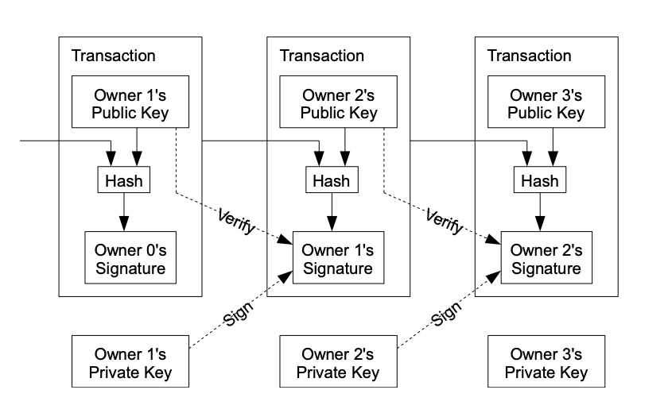
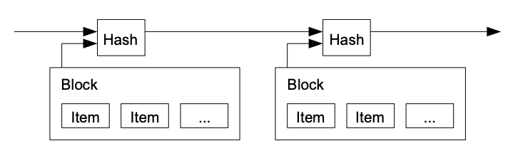

2. Transactions
We define an electronic coin as a chain of digital signatures.
Each owner transfers the coin to the next by digitally signing a
hash of the previous transaction and the public key of the next
owner and adding these to the end of the coin. A payee can verify
the signatures to verify the chain of ownership.

The problem of course is the payee can't verify that one of the
owners did not double-spend the coin. A common solution is to
introduce a trusted central authority, or mint, that checks every
transaction for double spending. After each transaction, the coin
must be returned to the mint to issue a new coin, and only coins
issued directly from the mint are trusted not to be double-spent.
The problem with this solution is that the fate of the entire
money system depends on the company running the mint, with every
transaction having to go through them, just like a bank.
We need a way for the payee to know that the previous owners did
not sign any earlier transactions. For our purposes, the earliest
transaction is the one that counts, so we don't care about later
attempts to double-spend. The only way to confirm the absence of a
transaction is to be aware of all transactions. In the mint based
model, the mint was aware of all transactions and decided which
arrived first. To accomplish this without a trusted party,
transactions must be publicly announced [1], and we need a system
for participants to agree on a single history of the order in
which they were received. The payee needs proof that at the time
of each transaction, the majority of nodes agreed it was the first
received.
3. Timestamp Server
The solution we propose begins with a timestamp server. A
timestamp server works by taking a hash of a block of items to be
timestamped and widely publishing the hash, such as in a newspaper
or Usenet post [2-5]. The timestamp proves that the data must have
existed at the time, obviously, in order to get into the hash.
Each timestamp includes the previous timestamp in its hash,
forming a chain, with each additional timestamp reinforcing the
ones before it.
